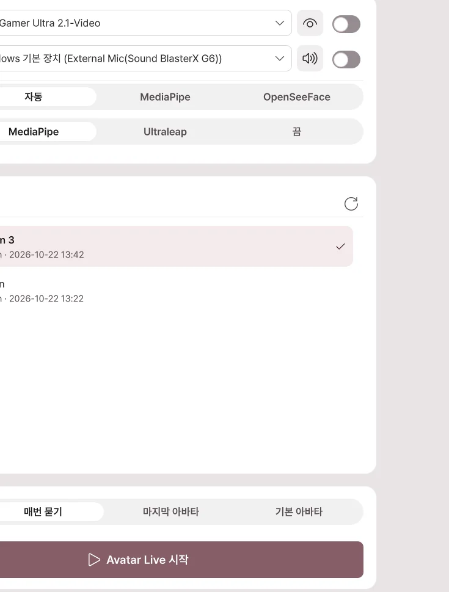

시작하기
아바타를 불러오고, 내 움직임을 연결하고, 방송 화면을 내보내는 순서로 시작합니다.
설치하고 실행하기
- BOOTH 구매 내역에서 Avatar Live ZIP 파일을 받습니다.
- 원하는 폴더에 압축을 모두 풉니다.
- 폴더 안의
AvatarLive.exe를 실행합니다. - 제품 활성화 화면에 구매할 때 안내받은 정보를 입력하고 활성화를 누릅니다.
Windows 10 / 11 64비트와 DirectX 11 지원 그래픽 카드가 필요합니다. 얼굴과 손을 따라 움직이려면 웹캠을, 목소리로 입을 움직이려면 마이크를 준비하세요.
아바타 내보내기
Unity 프로젝트에 있는 아바타를 Avatar Live에서 여는 .vavatar 파일로 만듭니다. 이미 .vavatar나 .vrm 파일이 있다면 아바타 열기로 넘어가세요.
Exporter 설치
- 아래 버튼을 눌러 VCC 또는 ALCOM에 저장소를 추가합니다. 창이 열리면 추가를 확인합니다.
- 아바타 프로젝트에 Curious Bobby - Avatar Exporter를 추가합니다.
- Unity에서 해당 프로젝트를 엽니다.
버튼으로 열리지 않으면 아래 주소를 복사해 Settings → Packages → Add Repository에 붙여 넣습니다.
https://raw.githubusercontent.com/zzubi-works/avatar-exporter/main/index.json
.unitypackage로 받았다면 Unity의 Assets → Import Package → Custom Package…에서 가져옵니다.
아바타 파일 만들기
- Unity 상단 Curious Bobby → Avatar Exporter를 엽니다.
- 아바타 칸에 Hierarchy의 아바타를 끌어 넣습니다.
- 표시 이름과 저장 폴더를 정합니다.
- .vavatar 내보내기를 누릅니다.
- 완료되면 파일 보기를 눌러 결과 파일을 확인합니다.
- Avatar Live의 아바타 열기에서 그 파일을 불러옵니다.
| 항목 | 바꾸면 어떻게 되나요? |
|---|---|
| 아바타 | 내보낼 캐릭터를 선택합니다. |
| 표시할 이름 | Avatar Live의 목록에 보이는 이름이 됩니다. |
| 표정 클립 | 선택한 표정 애니메이션을 함께 넣습니다. 없어도 내보낼 수 있습니다. |
| 저장 폴더 | 완성된 .vavatar 파일을 둘 폴더입니다. |
| .vavatar 내보내기 | 선택한 아바타로 파일을 만듭니다. |
| 파일 보기 | 완성된 파일이 있는 폴더를 엽니다. |
아바타를 수정했을 때
Unity에서 의상이나 머리카락 등을 고친 뒤 같은 아바타를 다시 내보냅니다. Avatar Live에서 새 파일을 불러오면 변경한 외형이 반영됩니다.
내보내기가 안 될 때
- Unity에서 아바타 자체의 오류가 없는지 확인합니다.
- 사용 중인 제작 도구와 Exporter를 확인하고 다시 내보냅니다.
- 파일은 생겼지만 일부가 분홍색이거나 사라졌다면 원본 프로젝트의 재질·셰이더와 해당 파츠의 켜짐 상태를 확인합니다.
아바타·의상·소품의 방송 및 공유 허용 범위는 각 제작자의 약관을 따릅니다. 콘텐츠 이용 조건을 확인하세요.
1. 아바타 열기

- 아바타 열기를 누르거나 파일을 창에 끌어 놓습니다.
- 아바타 목록에서 사용할 캐릭터를 고릅니다.
- Avatar Live 시작을 누릅니다. 장면 목록이 나오면 사용할 장면을 고릅니다.
| 가진 파일 | 할 일 |
|---|---|
.vavatar |
그대로 불러옵니다. |
.vrm |
그대로 불러옵니다. VRM 0.x와 1.0을 지원합니다. |
| Unity 아바타 프로젝트 | 아바타 내보내기로 .vavatar를 만든 뒤 불러옵니다. |
2. 내 움직임 연결하기

- 왼쪽 장치를 누릅니다.
- 웹캠 목록에서 사용할 카메라를 고르고 제목 오른쪽 스위치를 켭니다.
- 화면을 정면으로 보며 정면 보정을 누릅니다.
- 목소리로 입을 움직이려면 마이크도 고른 뒤 스위치를 켭니다.
iPhone이나 외부 트래커를 쓰면 장치에서 연결 방법을 확인하세요.
3. 배경과 구도 정하기

- 의상·표정: 왼쪽 메뉴에서 고릅니다.
- 얼굴·손 움직임: 동작에서 조절합니다.
- 배경·조명: 스튜디오에서 고릅니다.
- 구도: 하단 카메라 도구막대에서 얼굴·상반신·전신을 고릅니다.
F1을 누르면 메뉴를 숨기고 아바타만 봅니다. 다시 누르면 메뉴가 돌아옵니다.
4. 방송 프로그램에 연결하기
| 사용 목적 | 열 곳 |
|---|---|
| 이 PC의 OBS에 아바타 넣기 | Spout2 연결 |
| 다른 PC의 OBS로 영상 보내기 | NDI 연결 |
| Discord·Zoom 카메라로 사용 | 가상 카메라 |
| 게임과 아바타를 함께 공유 | 화면 공유 |
| 친구의 아바타와 합동 방송 | 원격 합방 |
| 시청자 이벤트에 아바타가 반응 | 방송 |
방송을 시작하기 전에는 OBS나 공유받는 쪽의 실제 영상을 확인하세요. 내 작업 화면과 송출 카메라의 구도가 다를 수 있습니다.
아바타 라이브러리
아바타 파일을 등록하고, 사용할 캐릭터와 시작 장면을 고릅니다.
시작 화면
| 버튼·항목 | 누르면 어떻게 되나요? |
|---|---|
| 아바타 열기 | .vavatar 또는 .vrm 파일을 목록에 추가합니다. 파일을 창에 끌어 놓아도 됩니다. |
| 최근 | 최근에 사용한 아바타를 보여 줍니다. |
| 폴더 | 지정한 아바타 폴더의 파일을 보여 줍니다. |
| 가져온 | 라이브러리로 가져온 아바타를 보여 줍니다. |
| 아바타 썸네일 | 시작할 캐릭터를 선택합니다. |
| 기본으로 지정 | 기본 아바타로 시작할 때 사용할 캐릭터로 정합니다. |
| 미리보기 | 선택한 캐릭터의 모습을 확인합니다. |
| 장면 목록 | 시작할 무대 구성을 고릅니다. |
| Avatar Live 시작 | 선택한 아바타와 장면으로 메인 화면을 엽니다. |
시작할 장치 고르기

- 카메라: 오른쪽 스위치를 켜면 시작할 때 선택한 웹캠을 사용합니다.
- 마이크: 켜면 시작할 때 선택한 마이크로 립싱크를 사용합니다.
- 얼굴·손: 각 부위를 추적할 방식을 고릅니다. 실행한 뒤 장치에서도 바꿀 수 있습니다.
다음 실행에 사용할 아바타
| 시작 설정 | 다음에 실행하면 |
|---|---|
| 매번 묻기 | 시작 화면에서 아바타를 직접 고릅니다. |
| 마지막 아바타 | 직전에 사용한 아바타로 시작합니다. |
| 기본 아바타 | 기본으로 지정해 둔 아바타로 시작합니다. |
실행 중에 바꾸기
- 왼쪽 위 아바타 이름을 누릅니다.
- 목록에서 바꿀 아바타를 선택합니다.
- 새 파일은 아바타 파일 추가로 가져옵니다.
기존 아바타를 교체하려면 이 목록을 사용하세요. 한 장면에 캐릭터를 더 놓는 아바타 추가는 스튜디오의 별도 기능입니다.
시작이 잘 안 될 때
Shift를 누른 채 프로그램을 실행하면 웹캠과 마이크를 켜지 않는 안전 시작을 사용할 수 있습니다. 장치 문제를 확인한 뒤 장치에서 하나씩 켜 보세요.
메인 화면
왼쪽에서 설정을 고르고, 가운데에서 아바타를 보며 조절합니다.
왼쪽 메뉴
| 메뉴 | 여기서 할 수 있는 일 |
|---|---|
| 아바타 메뉴 | 의상·표정·손 제스처와 저장한 자세를 적용합니다. |
| 장치 | 웹캠·마이크·iPhone·트래커를 연결합니다. |
| 동작 | 얼굴·몸·손이 움직이는 크기와 부드러움을 조절합니다. |
| 스튜디오 | 배경·조명·방·소품·아바타·촬영 카메라를 배치하고, 사진과 녹화를 찍습니다. |
| 출력 | OBS·가상 카메라·화면 공유에 연결합니다. |
| 방송 | Twitch·치지직·SOOP·디스코드 이벤트에 아바타가 반응하게 하고, 원격 합방 세션을 엽니다. 자세한 내용은 방송을 보세요. |
| 설정 | 창·성능·언어·단축키·업데이트를 바꿉니다. |
설정 패널 사용하기
- 카드 제목: 눌러서 세부 설정을 펼치거나 접습니다.
- 스위치: 해당 기능을 켜거나 끕니다. 제목을 펼치는 것과는 별개입니다.
- 핀: 패널 바깥을 눌러도 설정 패널이 접히지 않게 합니다.
- 숫자: 직접 입력하거나 옆의 슬라이더로 바꿉니다.
- 카드 제목 드래그: 자주 쓰는 카드를 위로 옮깁니다.
- 상단 돋보기: 설정 이름을 검색하고 결과를 눌러 바로 이동합니다.
카메라 도구막대

| 항목 | 바뀌는 것 |
|---|---|
| 얼굴·상반신·전신 | 선택한 아바타를 해당 크기로 화면에 담습니다. |
| 저장된 뷰 | 저장해 둔 위치와 방향으로 돌아갑니다. |
| 뷰 저장 | 지금 보고 있는 구도를 저장합니다. |
| 카메라 잠금 | 마우스로 구도가 바뀌지 않게 잠급니다. 아바타는 계속 움직입니다. |
| 시야각 | 낮추면 아바타가 크게, 높이면 주변이 넓게 보입니다. |
| 고정·자유·궤도 | 작업 화면을 마우스로 움직이는 방식을 바꿉니다. |
설정 패널 위에서 휠을 돌리면 설정이 스크롤됩니다. 아바타가 보이는 영역에서 돌리면 카메라 거리가 바뀝니다.
작업 화면과 송출 화면
| 화면 | 보는 사람 | 움직이면 |
|---|---|---|
| 씬 뷰 | 내가 편집하는 작업 화면 | 내 작업 시점이 바뀝니다. 씬 뷰를 송출 중이면 방송도 따라 바뀝니다. |
| 스튜디오 카메라 | 선택한 촬영 카메라의 시청자 화면 | 해당 카메라의 설정에 따라 구도가 바뀝니다. |
방송 구도를 유지하며 조명이나 소품을 편집하려면 스튜디오 카메라를 송출 대상으로 고릅니다.
자주 쓰는 조작
| 조작 | 결과 |
|---|---|
| F1 | 메뉴를 숨깁니다. 다시 누르면 표시합니다. |
| Ctrl+Z | 지원되는 편집 작업을 한 단계 되돌립니다. |
| 상단 초기화 | 트래킹·손 자세·물리 움직임을 복구합니다. |
| 왼쪽 아래 전원 | 프로그램을 종료합니다. |
옷이나 위치까지 바꾸는 모두 초기화는 적용 범위가 더 큽니다. 머리카락이 잠깐 엉킨 정도라면 먼저 일반 초기화를 사용하세요.
에디션과 종료
Basic은 개인적·비공개 사용, Pro는 방송·영상 공개·상업적 이용에 사용합니다. 에디션별 기능에서 필요한 기능을 확인하세요.
왼쪽 아래 전원 버튼으로 프로그램을 종료합니다. 창의 X 버튼이 트레이로 숨기도록 설정되어 있으면 송출은 계속됩니다. X 버튼 동작은 설정 → 창에서 바꿉니다.